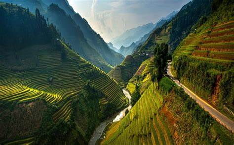
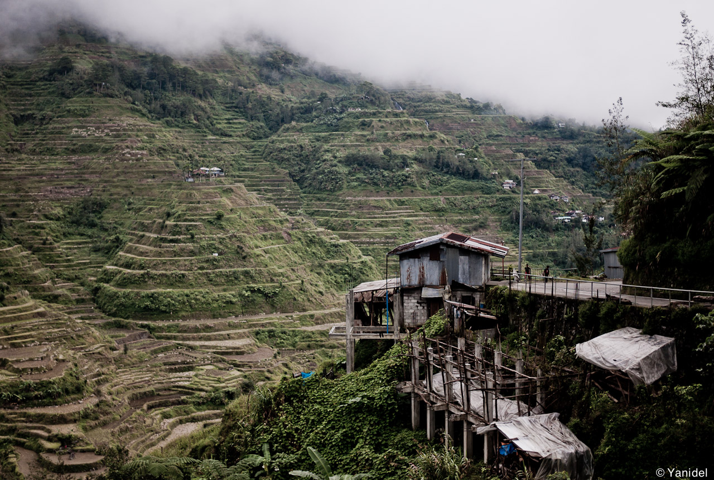

Banaue is a town on the Cordillera mountain range in the north of the island of Luzon, in the Philippines. It is mainly visited for its stunning rice terraces, which are a UNESCO World Heritage site. The Banaue Rice Terraces (Filipino: Hagdan-hagdang Palayan ng Banawe) are terraces that were carved into the mountains of Banaue, Ifugao, in the Philippines, by the ancestors of the Igorot people.
 © 2023 Kjieldsen Joy S. Esteban